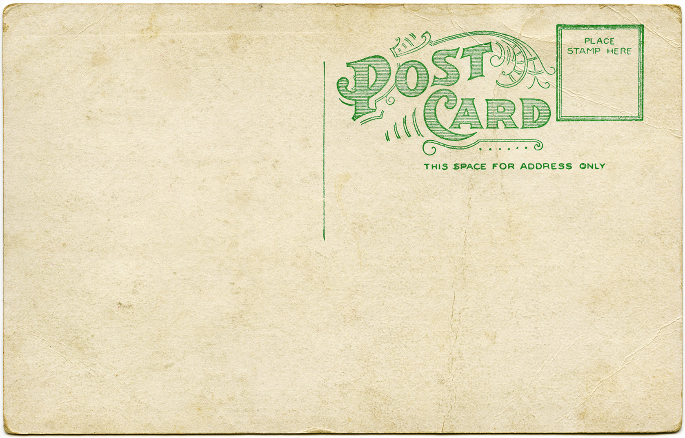

Mediums like email and text messaging arrived on the scene.
But despite the new technology, postcards are still one of the
most thoughtful things you can send to someone.
Write a postcard to someone or even write to yourself!
